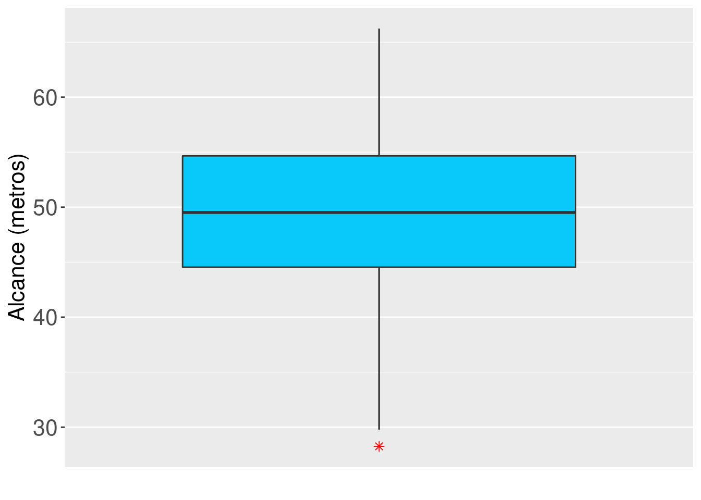

2.6 Diagrama de caja y bigotes
Ahora vamos a representar los datos mediante un gráfico que se denomina diagrama de caja y bigotes. Copia el siguiente código en tu script y ejecútalo para dibujar el diagrama de caja y bigotes asociado a nuestras \(100\) mediciones:
ggplot(
data = mandos,
mapping = aes(
x = factor(1),
y = alcance
)
) +
geom_boxplot(
fill = "#08C9F9",
outlier.colour = "red",
outlier.size = 2,
outlier.shape = 8
) +
xlab("") +
ylab("Alcance (metros)") +
scale_x_discrete(breaks=NULL) 
De nuevo, no es necesario que entiendas el código anterior en su totalidad. Es suficiente con saber qué elementos del código anterior habría que modificar para crear el diagrama de caja y bigotes para otros datos, que son:
- En los argumentos de la función
ggplot:- En el fragmento
data = mandos, cambiarmandospor el nombre de la hoja de datos en cuestión. - En el fragmento
y = alcance, cambiaralcancepor el nombre de la variable de interés.
- En el fragmento
- En el argumento de
ylabcambiar el texto por el que se desee para rotular el eje vertical.
Pasamos ahora a explicar cómo se construye e interpreta el diagrama de caja y bigotes que hemos dibujado.
2.6.0.1 Caja
La caja central coloreada se construye con los valores de:
Según las explicaciones anteriores, la caja coloreada del diagrama de caja y bigotes contiene el \(50\%\) de los datos: el \(25\%\) en la mitad inferior de la caja, desde el primer cuartil hasta la mediana; y el \(25\%\) en la mitad superior, entre la mediana y el tercer cuartil.
Calculamos el primer cuartil, la mediana, y el tercer cuartil de nuestra muestra con la siguiente instrucción:
quantile(muestra, probs=c(0.25,0.5,0.75)) 25% 50% 75%
44.545 49.520 54.660 El primer cuartil resulta ser \(44.545\), la mediana \(49.52\), y el tercer cuartil \(54.66\). Veamos por ejemplo cómo se ha obtenido el valor \(49.52\) para la mediana, que deja el \(50\%\) de los datos por debajo y la otra mitad por arriba. En primer lugar ordenamos nuestros datos, de menor a mayor, con la orden:
sort(muestra)[1] 28.26 29.78 35.32 36.08 36.39 36.74 36.82 37.01
37.13 37.24 38.65 39.07
[13] 39.88 40.85 40.85 41.10 41.25 41.37 42.36 42.60
43.15 43.26 43.38 44.04
[25] 44.47 44.57 44.58 44.67 44.82 45.19 45.23 45.37
45.39 45.68 45.76 45.90
[37] 45.99 46.04 46.07 46.50 46.56 46.99 47.12 48.06
48.14 48.32 48.79 48.88
[49] 49.35 49.36 49.68 49.94 49.96 49.97 50.12 50.32
50.52 50.53 50.56 50.58
[61] 50.76 50.83 51.04 51.30 51.74 52.19 52.37 53.50
53.58 53.94 54.22 54.31
[73] 54.42 54.59 54.59 54.87 55.05 55.06 55.23 55.39
55.52 55.58 56.12 56.68
[85] 56.79 56.90 56.98 56.99 57.01 57.35 57.59 58.78
58.96 60.17 60.18 60.57
[97] 60.85 62.72 65.00 66.24En la salida del comando anterior verás que:
el dato que ocupa la posición \(50\) en la secuencia de valores ordenados, es \(49.36\) (recuerda que tienes que fijarte en los números entre corchetes al principio de cada línea de la salida para saber qué posición ocupa cada dato). Este valor deja \(49\) valores por debajo, y \(50\) por arriba.
Y el dato que ocupa la posición \(51\), es \(49.68\). Deja \(50\) valores por debajo y \(49\) por arriba.
Así, ni \(49.36\) (posición \(50\)), ni \(49.68\) (posición \(51\)), dejan justo la mitad de los datos por debajo y la otra mitad por arriba.
La posición ideal para la mediana sería la posición \(50.5\). Por esta razón, el cálculo que hace R para obtener la mediana es
\[
\frac{49.36+49.68}{2}=49.52,
\]
la media aritmética entre el dato de la posición \(50\) y el de la posición \(51\).
2.6.0.2 Bigotes y outliers
Queda por explicar qué significan los “bigotes”, que son las líneas verticales por encima y debajo de la caja central, y por qué aparece resaltado un valor con un asterisco rojo por debajo del bigote inferior.
El propósito de los bigotes es resaltar los datos extremos, muy pequeños, o muy grandes, que se denominan outliers. En nuestro gráfico los outliers aparecen resaltados con un asterisco rojo. Datos por debajo del bigote inferior son catalogados como outliers por ser atípicamente pequeños, y datos por encima del bigote superior son considerados outliers por atípicamente grandes. Vemos que en nuestra muestra ha aparecido un oulier por debajo del bigote inferior, que, mirando la escala del eje \(Y\), vemos que tiene un valor menor que \(30\). Concretamente, se trata del valor mínimo \(28.26\) que apareció en primer lugar cuando ordenamos los datos de menor a mayor, y que podemos ver directamente calculando el mínimo:
min(muestra)[1] 28.26Los datos extremos u outliers pueden ser datos erróneos (debidos a errores en las mediciones, en la transcripción de los datos al fichero \(\dotsc\)). Pero también pueden ser datos correctos que, aun teniendo poca probabilidad de aparecer, han aparecido por azar en nuestra muestra. Aunque es una práctica frecuente desechar los outliers sistemáticamente, no es en absoluto una práctica recomendable. De hecho los outliers pueden ser lo más interesante de la muestra. La historia más famosa sobre las posibles consecuencias de la eliminación automática de outliers está relacionada con la detección del agujero de ozono. En 1985 se publicó el estudio mostrando que los niveles de ozono en la Antártida habían caído un \(10\%\) por debajo de lo normal. Se descubrió entonces que las mediciones inusualmente bajas del nivel de ozono ya habían sido registradas por el satélite Nimbus-7 de la NASA en 1976, pero que dichas mediciones fueron ignoradas al ser procesadas mediante un programa informático que descartaba automáticamente los valores excesivamente pequeños, como si se tratara de errores. De no ser por este tratamiento inadecuado de los outliers, el agujero de ozono podría haberse detectado casi una década antes.
Veamos cómo se dibujan los bigotes para decidir qué datos son outliers. En primer lugar se calcula la diferencia entre tercer cuartil y primer cuartil (que es la anchura de la caja y se denomina rango intercuartílico) y se multiplica por \(1.5\). En nuestro caso, esta cantidad queda \[ 1.5(54.66-44.545)=15.1725. \]
Se catalogan como outliers aquellos valores que disten de los bordes de la caja central más de la cantidad anterior. En nuestro caso, serán outliers los valores inferiores a \[ 44.545-15.1725=29.3725 \] y los superiores a \[ 54.66+15.1725=69.8325. \] El bigote inferior se extiende hasta el menor dato que no es considerado outlier. Y el bigote superior se extiende hasta el mayor dato que no es considerado outlier. Los datos por debajo y por arriba de los bigotes se clasifican como outliers y en nuestro caso se representan con un asterisco rojo.
Miremos de nuevo la secuencia ordenada para nuestros \(100\) datos:
sort(muestra)[1] 28.26 29.78 35.32 36.08 36.39 36.74 36.82 37.01
37.13 37.24 38.65 39.07
[13] 39.88 40.85 40.85 41.10 41.25 41.37 42.36 42.60
43.15 43.26 43.38 44.04
[25] 44.47 44.57 44.58 44.67 44.82 45.19 45.23 45.37
45.39 45.68 45.76 45.90
[37] 45.99 46.04 46.07 46.50 46.56 46.99 47.12 48.06
48.14 48.32 48.79 48.88
[49] 49.35 49.36 49.68 49.94 49.96 49.97 50.12 50.32
50.52 50.53 50.56 50.58
[61] 50.76 50.83 51.04 51.30 51.74 52.19 52.37 53.50
53.58 53.94 54.22 54.31
[73] 54.42 54.59 54.59 54.87 55.05 55.06 55.23 55.39
55.52 55.58 56.12 56.68
[85] 56.79 56.90 56.98 56.99 57.01 57.35 57.59 58.78
58.96 60.17 60.18 60.57
[97] 60.85 62.72 65.00 66.24El único dato catalogado como outlier es \(28.26\), por eso el bigote izquierdo se extiende hasta \(29.78\) (el mínimo no outlier) y el bigote derecho hasta \(66.24\) (el máximo, no outlier).